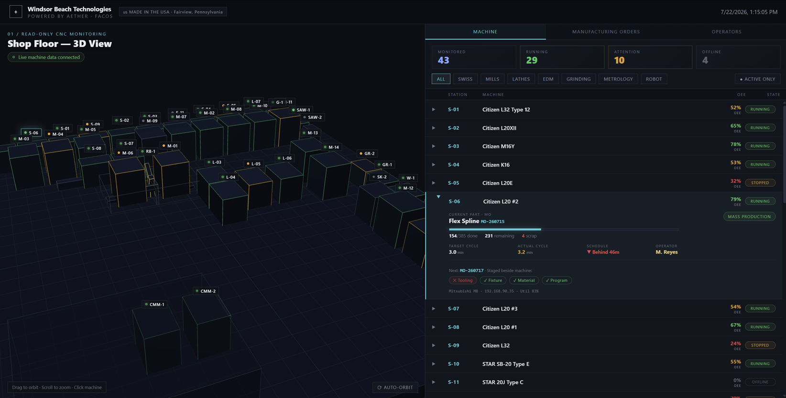

Four parts, one continuous thread. APG prices your geometry and plans the process, FacOS runs the floor in real time, the Fabricator makes the part, and closed-loop metrology proves it — no CAM programmer, no re-engineering.

The Aether Fabricator is a modular, plug-and-play production cell that turns raw material into finished precision parts with minimal human intervention. Each cell runs autonomously, 24/7 — add cells to scale capacity linearly, with no re-engineering.
For pricing, contact sales@aethermfg.com
APG reads geometry straight out of your CAD file, plans the machining process behind it, and hands back a quote you can see the reasoning for — the same way, every time.
FacOS runs the floor in real time — machines, robots, orders and inspection on one model. Equipment that was never designed to talk to each other behaves like a single factory.

Parts are inspected on Zeiss CMM and the result returns to FacOS and APG. Quality is not a gate at the end of the line — it is what tunes the next part.
Held on the system, not on the order.